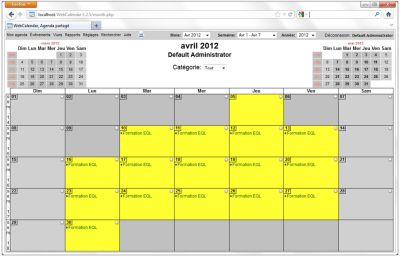

Agenda en ligne Fonctionnalités :
Technologies :
Documentation : http://www.k5n.us/webcalendar.php?topic=Documentation | Zoom |
Enregistrer les actions du cas de test suivant avec Katalon
TC01 : Création d'un événement avec plusieurs participants
Pré-requis :
L'application WebCalendar est configurée pour que l'interface soit en français.
L'utilisatrice « Florence Warnet » existe.
Le calendrier de l'utilisateur ne doit pas comporter d’événements susceptibles d'être en conflit avec l’événement à créer.
# | ACTION | RÉSULTAT ATTENDU |
|---|---|---|
1 | Se connecter à l'application WebCalendar. URL = http://localhost/WebCalendar-1.2.5-auto/login.php | La page de login de WebCalendar est affichée. |
2 | Se loguer avec l'utilisateur « Florence Warnet » :
| Le calendrier de l'utilisateur est affiché. |
3 | Sélectionner le menu « Événements », puis cliquer sur le sous-menu « Ajouter un événement ». | L'écran « Ajouter un événement » s'affiche. L'onglet « Détails » est présélectionné. |
4 | Saisir les détails de l’événement :
| N/A |
5 | Cliquer sur le bouton « sauvegarder ». | Le calendrier de l'utilisateur est affiché. Dans la cellule correspondant à la date du jour, le lien « Cours automatisation » est affiché. |
6 | Cliquer sur le lien « Déconnexion » | La page de déconnexion s'affiche |
Qu'est ce qui est constaté ?